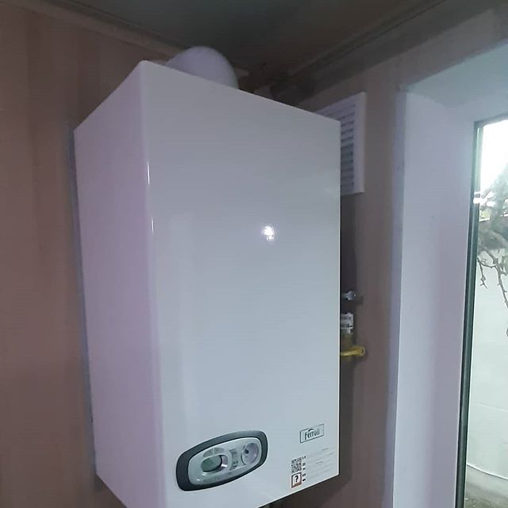
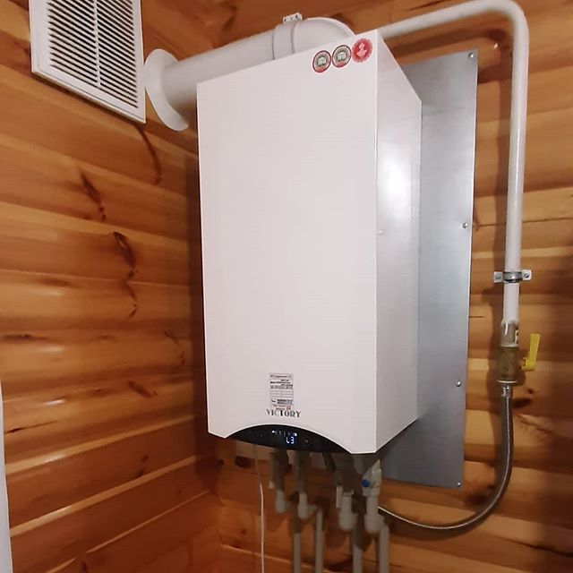
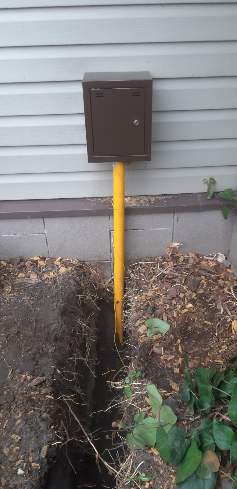
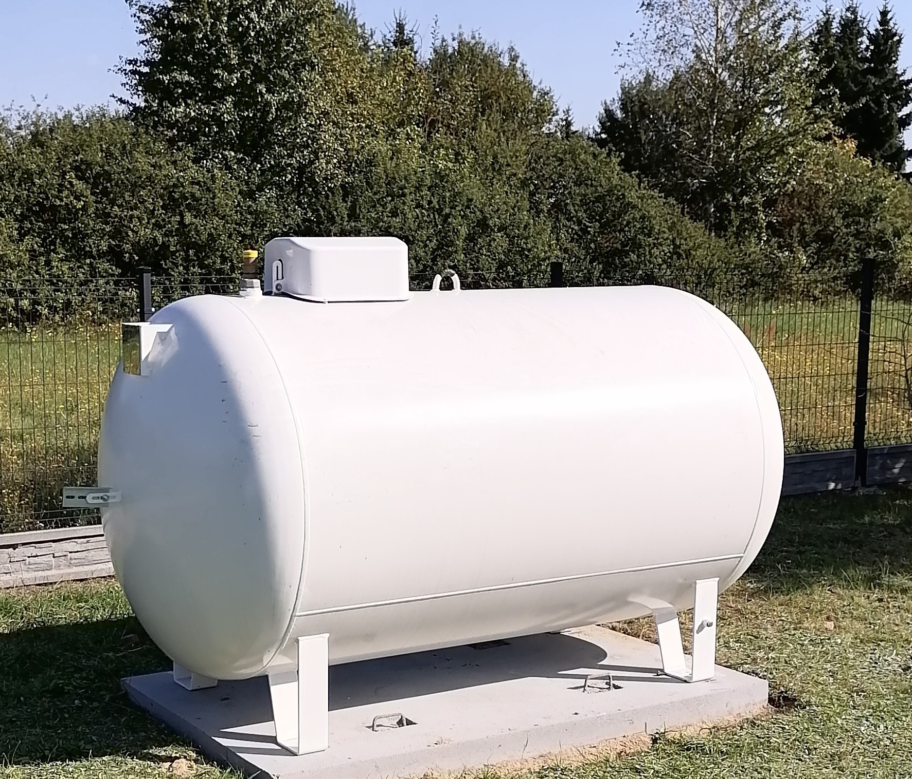

Firma DEK SOLAR zajmuje się sprzedażą oraz montażem kotłów gazowych
Nasza doświadczona ekipa monterska jest w stanie podłączyć każdy kocioł gazowy do Państwa instalacji domowej. Zajmujemy się doprowadzaniem GAZU od skrzynki przyłączeniowej przy bramie do domu. Kotły gazowe pozwalają nam korzystać z nowoczesnego i bezobsługowego sytemu ogrzewania domu i podgrzewania wody użytkowej. Większość kotłów gazowych przystosowanych jest zarówno do spalania gazu ziemnego, jak i płynnego. Biorąc pod uwagę budowę wyróżniamy urządzenia:
- tradycyjne(atmosferyczne) - są wciąż najpopularniejsze, przede wszystkim ze względu na stosunkowo niewysoką cenę. Kotły te mają otwartą komorę, co oznacza, że powietrze niezbędne do spalania gazu pobierają z pomieszczenia, w którym się znajdują. Powoduje to niestety jego wychłodzenie, zwłaszcza zimą, więc raczej tego typu kotła nie montujmy w łazience;
- kondensacyjne – mają bardzo wysoką sprawność (ponad 109%), dzięki czemu zużywają mniej gazu niż urządzenia tradycyjne. Ponadto są bardzo bezpieczne w użytkowaniu, gdyż proces spalania obywa się w zamkniętej komorze. Świeże powietrze pobierają nie z wnętrza domu, ale bezpośrednio z zewnątrz przez specjalne przewody powietrzno-spalinowe. Nie wychładzają więc pomieszczenia i można je montować w łazience lub kuchni. W zależności od wielkości rodziny, liczby łazienek w domu i jednoczesności korzystania z nich do wyboru są następujące rodzaje kotłów:

- wiszący dwufunkcyjny - podgrzewa wodę w sposób przepływowy. Ze względu na ograniczoną jej ilość poleca się go przede wszystkim do domów z jedną łazienką znajdująca się blisko kuchni;- wiszący jednofunkcyjny z zasobnikiem – woda jest podgrzewana w zasobniku wiszącym obok ustawionym pod kotłem. Przy objętości zasobnika nie mniejszej niż 100 l, będzie można korzystać w tym samym czasie z dwóch łazienek (przy założeniu, że w jednej jest na przykład wanna, a w drugiej – kabina prysznicowa);

- stojący jednofunkcyjny z zasobnikiem – w takim zestawie oba urządzenia montowane są zazwyczaj obok siebie. Ze względu na zajmowaną przez nie powierzchnię, najlepiej je umieścić w oddzielnym pomieszczeniu. - stojący jednofunkcyjny z zasobnikiem w jednej obudowie – takie urządzenie przypomina z wyglądu lodówkę. W zestawie oprócz kotła i zasobnika znajdują się: pompa obiegowa, wzbiorcze naczynie przeponowe.
 Kompaktowy gazowy kocioł kondensacyjny VITODENS 111-W
Wysoki komfort ogrzewania i podgrzewu wody użytkowej. Posiada ładowany warstwowo zasobnik c.w.u. ze stali szlachetnej o pojemności 46 litrów. Zapewnia on komfort poboru ciepłej wody, porównywalny z pojemnościowym podgrzewaczem c.w.u. o pojemniości 150 litrów. Podczas pobierania ciepłej wody zasobnik ładowany warstwowo jest na bieżąco uzupełniany wodą podgrzewaną do żądanej temperatury w przepływowym wymienniku ciepła.Właściwości Kotła VITODENS 111-W;
+ Wiszący, gazowy kocioł kondensacyjny, o mocy grzewczej od 6,5 do 35,0 kW
+ Sprawniść znormalizowana: 98%
+ Idealny do zastąpienia starych kotłów, dzięki małej wysokości montażowej imiejscu na adaptery do starych przyłączy
+ wymiennik ciepła Inox-Radial z dziesięcioletnią gwarancją
+ Bardzo cicha praca: < 38 dB
+ Modulowany palnik cylindryczny MatriX ze stali szlachetnej
Więcej na ten temat znajduje się TUTAJ KOTŁY GAZOWE VIESSMANN
Trochę informacji o Gazie
Co to jest gaz płynny? Gaz płynny to mieszanina propanu i butanu (lub sam propan) skroplona pod ciśnieniem par własnych. Może być wykorzystany w domu do przyrządzenia posiłków, ale także na potrzeby centralnego ogrzewania i przygotowania ciepłej wody, jako tanie i ekologiczne źródło energii, cenne szczególnie tam, gdzie z uwagi na brak uzbrojenia terenu nie można skorzystać z gazu ziemnego. Gaz płynny ma stosunkowo małą temperaturę spalania. W technice sanitarnej wykorzystywany jest jako paliwo w palnikach propanowych lub propanowo-butanowych, do lutowania miękkiego i twardego miedzi. Zapotrzebowanie na gaz płynny w budynku Wykorzystując gaz płynny tylko do przygotowania posiłków zużywamy średnio 5-10 litrów gazu na osobę, na miesiąc. Ile gazu pochłonie nam centralne ogrzewanie i przygotowanie ciepłej wody? Zużycie będzie zależało tutaj od kubatury budynku, jego ocieplenia, a także od ilości mieszkańców. Dla budynków dobrze ocieplonych, o współczynniku przenikania ciepła ścian zewnętrznych 0,35 W/m2K i szczelnych oknach, średnie zapotrzebowanie ciepła na każdy metr kwadratowy wyniesie ~100 kWh/ rok). Przyjmując wartość opałową propanu na poziomie 7,0 kWh/litr łatwo obliczyć, że na każdy metr kwadratowy powierzchni ogrzewanej zużyjemy rocznie około 14 litrów gazu (Tabela 1). Zużycie gazu na potrzeby c.w.u. wyniesie średnio 170 l gazu/rok na osobę, przy zużyciu c.w.u. 60 l/osobę dziennie (tabela 2) Można przyjąć, że roczne zapotrzebowanie na gaz płynny dla 4-ro osobowej rodziny, w domku o powierzchni 120 m2 wyniesie nie więcej niż 2500 litrów. Daje to wydatek rzędu 4000 zł, przy średniej cenie gazu 1,3 zł za litr. Cena gazu płynnego zmienia się w ciągu roku. Najniższa jest w sezonie letnim (do tego trzeba doliczyć 23% podatku VAT). W zimie ceny rosną o 30-40%. Możemy jednak uzgodnić z dostawcą stałą cenę całoroczną. Jej wysokość ustala się wtedy indywidualnie , na podstawie średniego zużycia. Podpisanie umowy z dostawcą może nastąpić np. 4 miesiące po pierwszym tankowaniu.